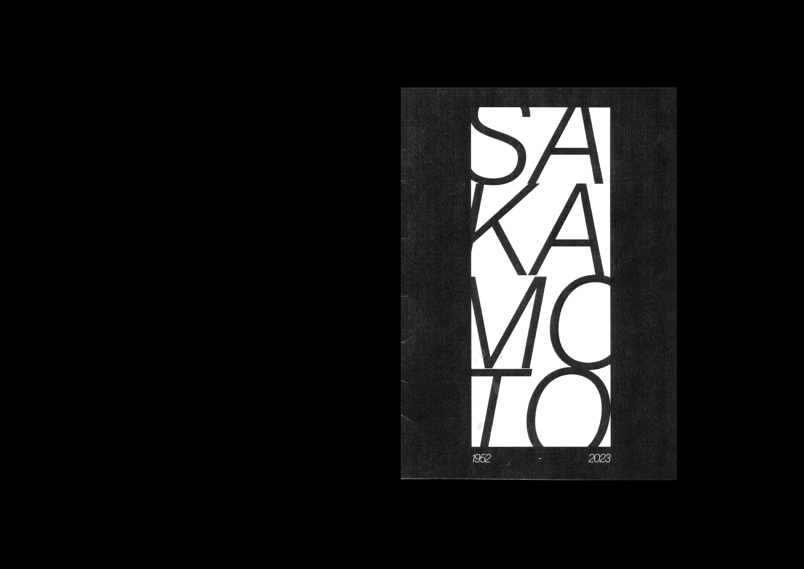
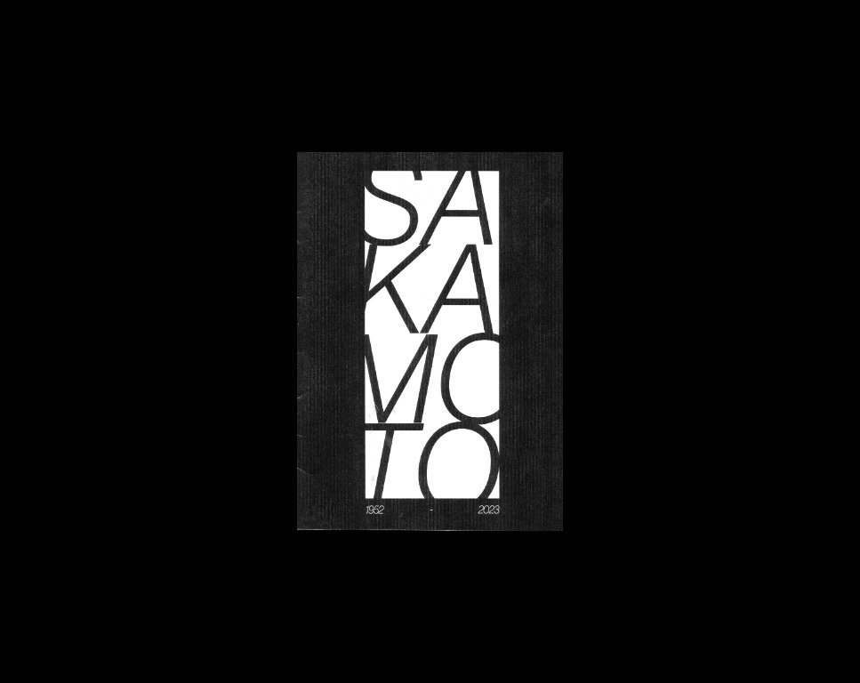
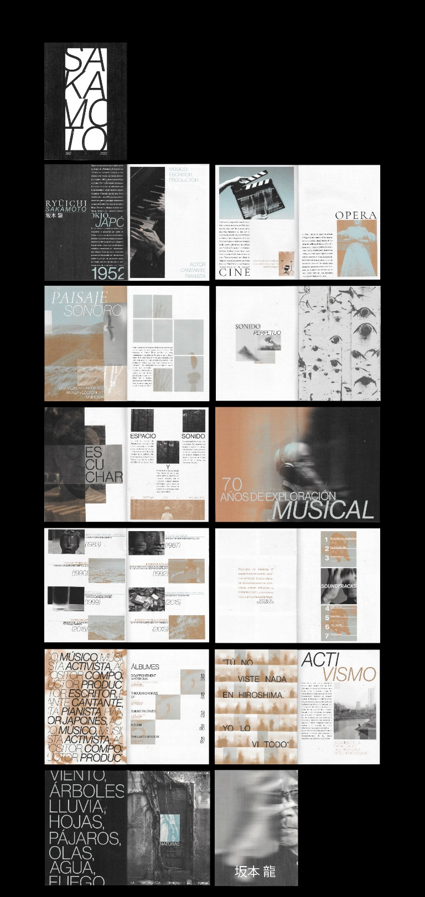

Diseño Editorial
Fanzine Sakamoto
Sobre el proyecto
Una pieza editorial
Una pieza editorial diseñada para transmitir la obra, el activismo, la conexión con la naturaleza y el legado sonoro del compositor Ryuichi Sakamoto.
Portada

Páginas interiores
